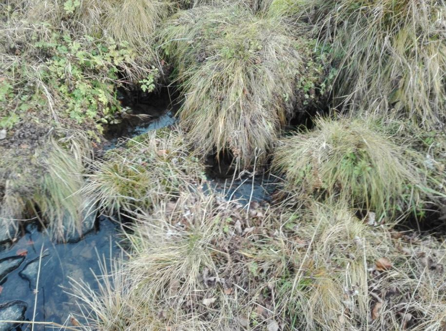

La torbiera
Tipo di ambiente umido caratterizzato dalle presenza di torba; si distinguono torbiere alte, basse, oligotrofiche, eutrofiche; quelle basse sono caratteristiche di bassi fondali con vegetazione torbigena formata in prevalenza da carici, eriofori e scirpi; le alte, così chiamate per la loro progressiva sopraelevazione dovuta al continuo accumulo di torba acida al di sopra di uno strato iniziale formatosi in ambiente con scarso drenaggio, sono caratterizzate da piccoli dossi o collinette alte anche diversi metri al di sopra della falda freatica che alimenta per capillarità la torba sovrastante e la vegetazione tipica, costituita solitamente da muschi e in particolare da sfagni; eutrofiche sono quelle che si formano dove l’acqua è relativamente ricca di sali minerali; oligotrofiche, quelle con torba acida che si forma in presenza di acqua povera di sali minerali, come è in particolare quella piovana. Quella che abbiamo incontrato è una torbiera bassa, abbastanza povera di piante tipiche ma vi possiamo comunque osservare in estate la magnifica fioritura della Swertia perennis (rarissima sull’Appennino) vedi foto, Pinguicola vulgaris, pianta carnivora anche molto rara sull’Appennino e vari tipi di scirpi e giunchi, insomma una vera miniera di piante rare e particolari.